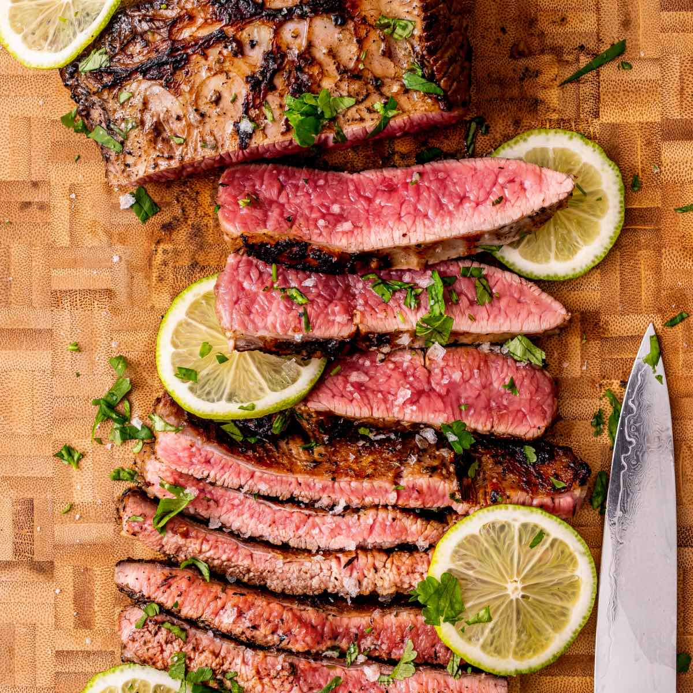

Steak
HOME

A synonym of excellence, when someone thinks of a luxurious meal the image of a steak is one of the first which pops to mind.
Why? Simple, it is the embodiment of luxury. It is a timeless classic like a datejust rolex or a well fitted suit.
However despite being a classic, it has ever evolved despite its simplicity. We will sousvide the steak while basting it.
ingredients
steps
- Set up the sousvide
- season steak with salt, pepper and any other seasoning
- add the steak to the bag with aromatics
- Sousvide the steak at 49 degree celcius
- sear the steak with butter
- baste to form a good sear
- rest the steak
- Bon Appetit